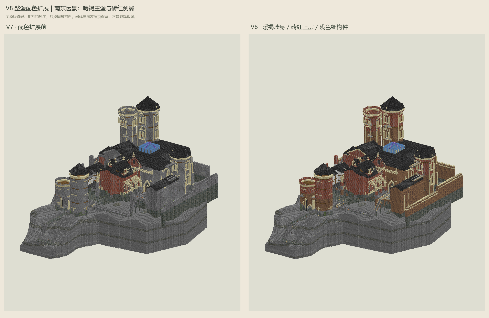
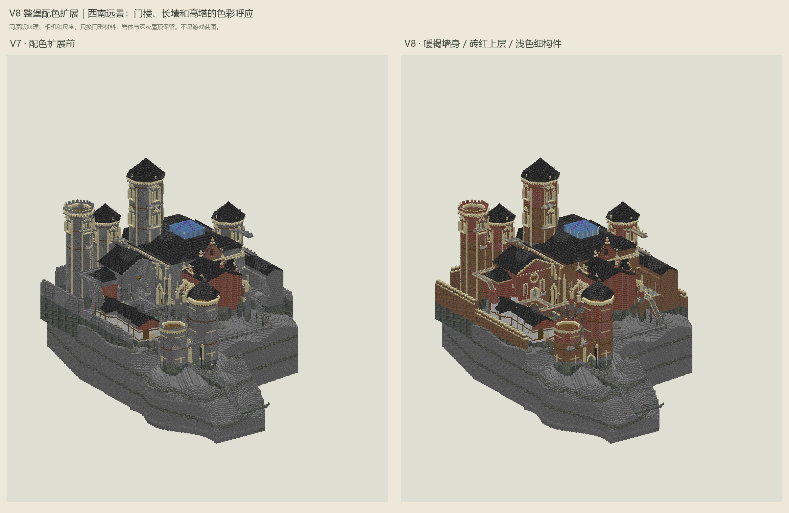
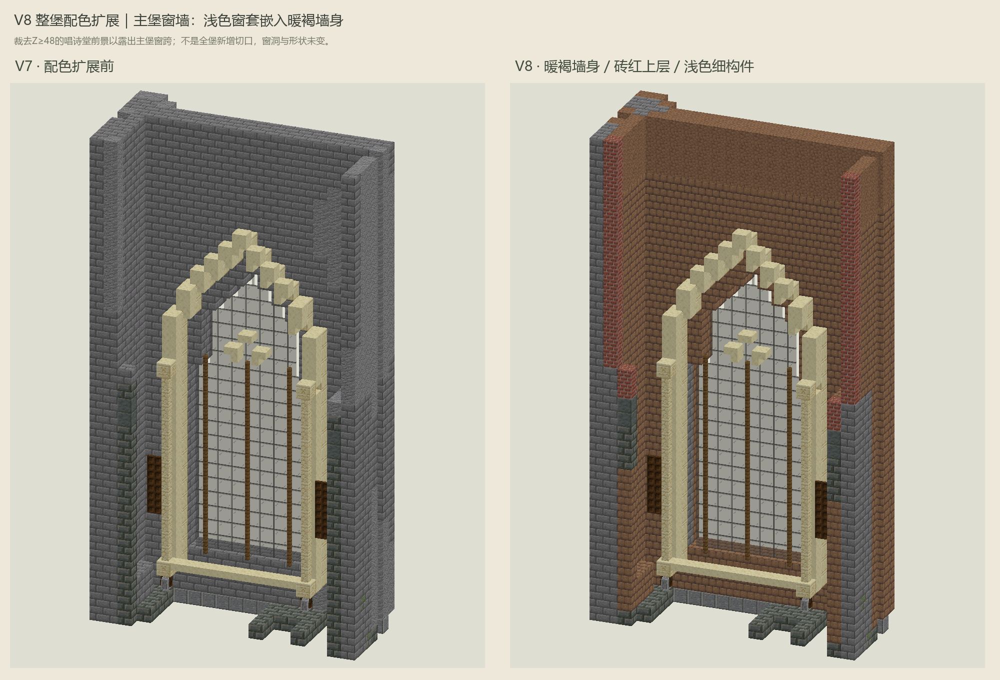
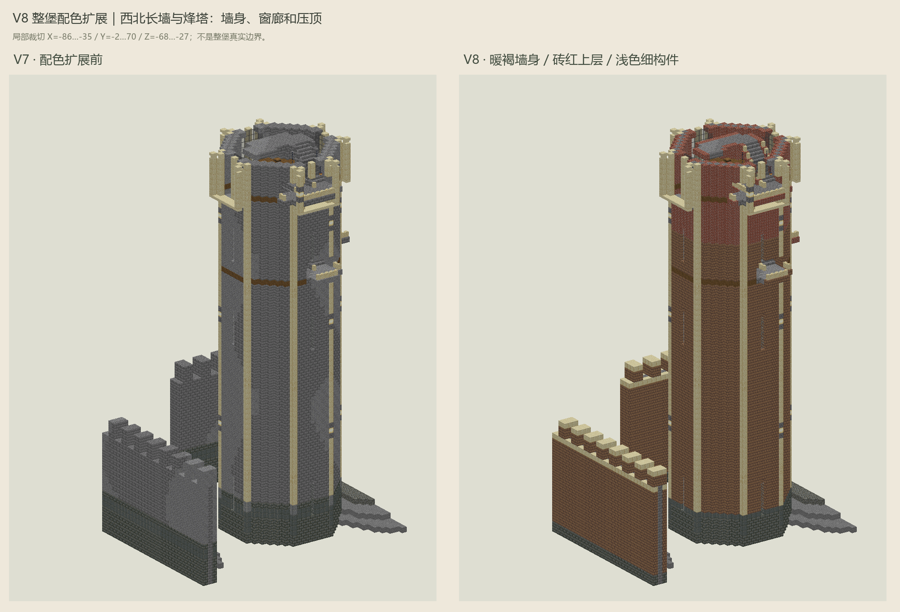

余响堡 / V8 整堡配色扩展 / 第3步进行中
让暖色贯穿城堡，灰色回到基座与屋顶
从主堡到外围长墙以暖褐泥砖连成一体；门楼、西翼和塔顶窗廊用砖红呼应唱诗堂。浅砂岩统一窗框和檐口，生活翼保留浅墙木构。岩体、低部灰石和深灰屋顶继续承担厚重感，水晶仍只留在音乐核心。
范围与查看说明 ↗ 材料与逐项换材数量 ↗ 回看V7构件形状 ↗
本轮是配色扩展，不是全堡最终施工稿。形状、窗洞、音乐、灯具和登记通路保持；未新增几何细节或完成照明验收。V7及源NBT保留，没有新版NBT、没有修改真实存档。
整堡：两侧使用相同相机和尺度


由本机26.3-snapshot-9的原版方块模型与纹理绘制，不是游戏截图。远景显示建筑及岩体，音乐/控制不单独绘出，但完整模型中仍保留。灰色保留处还包括音乐保护区、路面和冻结灯具组件。
近看：灰墙怎样接上已有窗框和塔身


近景按图片标明的坐标范围裁切。主堡窗跨剖去Z≥48的唱诗堂前景以便观察，不代表城堡新增切口。灰墙替换仍采用同形状方块，楼梯、台阶和墙的方向/连接状态未改。
一套材料语法，不是每幢建筑一种颜色
色块取自原版纹理的平均色，仅帮助比较色温；实际砌缝和明暗看上方纹理渲染。铜绿和音乐核心水晶保持局部使用，不扩展成另一种大面积墙色。
真实模型与可核对的改动
完整V8模型（含音乐） ↗ 相对V7的逐格换材 ↗ 检查与源文件摘要 ↗
逐格差异是设计坐标，不能直接当服务器世界坐标。只处理朝向空气的墙皮，保护区和低部灰石例外；这不是房间内饰设计。材料表包含建筑、岩体和音乐机，不是最终采购清单。
展开实际替换明细
| 原材料 | 新材料 | 原位替换格数 |
|---|
展开完整模型材料现状（名称汇总，不区分方向）
| 材料 | V7 | V8 | 净变化 |
|---|
后续仍有3个工作阶段
③ 继续精修剩余立面、塔楼、山墙和扶壁的形状，本轮先落实配色。
④ 照明协调与可建性复核。
⑤ 统一施工包、NBT与隔离创造档验收。叙事内饰和捷径机关另列一轮。
原32,260格音乐/控制、2,307个音符盒、471个光源及35条登记路线保持。保护检查不等于音乐实听、碰撞、防跌落或防刷怪验收。预览省略UV锁定、环境遮蔽、生物群系染色和游戏光照，动画取首帧。网页仅静态检查，未浏览器交互验收。分享时请连同本文件夹内4张PNG一起发送，无需Python或网页服务。